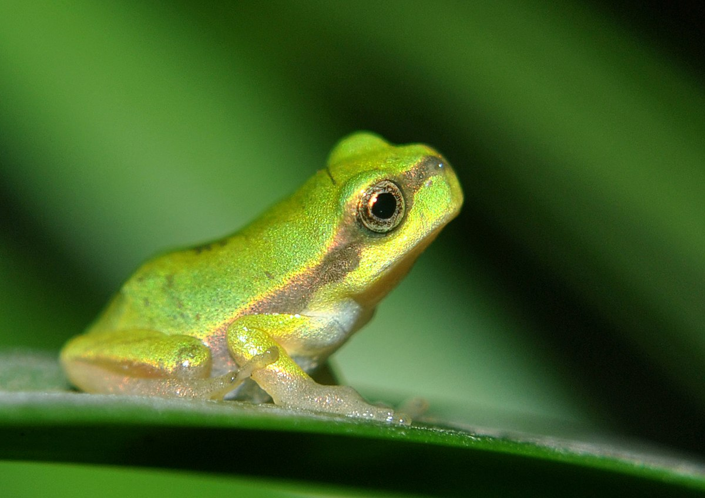

La diversidad de ecosistemas naturales presentes en el Departamento hace que exista una gran riqueza de especies animales. Sin embargo no se dispone de estudios de investigación y de inventarios de flora y fauna que permitan cuantificar y clasificar las especies que posee. Dentro de las especies más importantes se encuentran:
peces
En la Orinoquía se han registrado más de 1000 especies, correspondiendo a la Colombiana, 258 . Solo existen cifras de los estudios realizados en el área de influencia del complejo petrolero de Caño Limón, donde se han registrado más de 140 especies. La actividad pesquera se realiza principalmente sobre los ríos Arauca, Cravo Norte y Casanare principalmente, y algunos de menor tamaño como el Tame, Ele, Cuiloto, Juriepe, Samuco y Cinaruco entre otros. Las especies más importantes por su valor económico son: La cachama (Colossoma macropomun), la palometa (Carnegiella mathae) los bocachicos o coporos del género Prochilodus, los bagres de los géneros Pseudoplatystoma, Brachiplatistoma y Pimelodus sp, entre otros.La cachama negra (Colossoma macropomum) es una especie de pez de la familia Serrasalmidae, conocida también como cherna, gamitana, tambaquí o pacú negro, originaria de la cuenca del Orinoco y de la Amazonia. Es la única especie del género Colossoma.
La palometa negra, muchas veces nombrada simplemente palometa, también llamada castañeta y en algunas zonas de España conocida popularmente con el nombre de japuta o zapatero, es una especie de pez perciforme de la familia Bramidae.
Anfibios
Corresponde a las especies de ranas, sapos y las salamandras. Sin embargo en el Departamento han sido poco estudiados, se registran 19 especies pertenecientes a 8 géneros diferentes. Entre los que más se destacan están los sapos de los géneros Bufos, ranas de los géneros Hyla y las del género Scinax sp.Bufo es un género de anfibios anuros de la familia Bufonidae que incluye, entre otros, al sapo europeo común. Se distribuye por las regiones templadas de Eurasia, norte de África, Oriente Medio, Japón y la zona norte del sudeste asiático.

Hyla es un género de anfibios anuros de las familia Hylidae. La palabra Hyla proviene de árbol, ya que estas ranas son verdaderamente arborícolas. Presentan una amplia distribución, que incluye Europa, sur de Asia, norte de África y Norteamérica.
Reptiles
Sobresalen las culebras con más de 50 especies; las tortugas, con 10 especies pertenecientes a cuatro géneros; las lagartijas y miembros de la familia Iguanidae con 14 especies; las babillas, caimanes y otros saurios. En total se encuentran 116 especies de reptiles distribuidas en 68 géneros de 17 familias . Especies de la tortuga Podocnemis expansa, de la Iguana iguana y de las babillas Cayman crocodylus, por su valor económico en los mercados internacionales amenazando su extinción.La charapa arrau es una especie de tortuga de la familia Podocnemididae, una de las tres familias del suborden Pleurodira —tortugas cuello de serpiente, que protegen la cabeza bajo un lado del caparazón, sin retraerlo—

El caimán de anteojos, también conocido como cachirre, blanco, guagipal, babilla o baba, es una especie de reptil carnívoro que habita los diferentes tipos de cursos de agua dulce, ciénagas y pantanos en el sur de México, Centroamérica y el noroeste de América del Sur.
Mamiferos
Se registran 85 especies de mamíferos pertenecientes a 40 géneros de 28 familias. Entre los más comunes se encuentran armadillos, perezosos, ardillas, puercos de monte, venados, danta, oso palmero, lapas o tinajo, zorro, ratón fara, chácharo y el manatí entre otros. Especies como el chigüiro, danta y manatí se encuentran en peligro de extinción .El capibara, carpincho o chigüire es una especie de roedor de la familia de los cávidos, nativa de Sudamérica. Es el roedor viviente de mayor tamaño y peso del mundo, del género Hydrochoerus. El único otro miembro existente de ese género es el capibara menor.
Los dasipódidos, conocidos comúnmente como armadillos, son una familia de mamíferos placentarios del orden Cingulata. Se caracterizan por poseer un caparazón dorsal formado por placas yuxtapuestas, ordenadas por lo general en filas transversales, con cola bastante larga y extremidades cortas. Habitan en América.

Los folívoros o filófagos son un suborden de mamíferos placentarios del orden Pilosa, comúnmente conocidos como perezosos o pereza. Son animales neotropicales de variado tamaño endémicos de las selvas húmedas de América Central y América del Sur.
Aves
Se encuentran bien representadas en el Departamento; hay registros de 72 familias, 242 géneros y 350 especies. La familia con mayor diversidad es Tyrannidae con 33 géneros registrados, y entre los géneros con mayor número están los Falcos conocidos comúnmente como halcones; el género Buteo que incluye los gavilanes; las mirlas del género Turdus y las guacamayas del género Ara. Especies como el Arauco (Anhima cornuta) de la familia de la Anhimidae se encuentran en peligro de extinción .El gavilán común es una especie de ave accipitriforme de la familia Accipitridae, presente en muchas zonas de Eurasia —desde la península ibérica y el norte de África hasta Japón y Vietnam—
Los guacamayos son aves del orden Psittaciformes y de la familia Psittacidae, muy llamativas por el colorido de su plumaje.